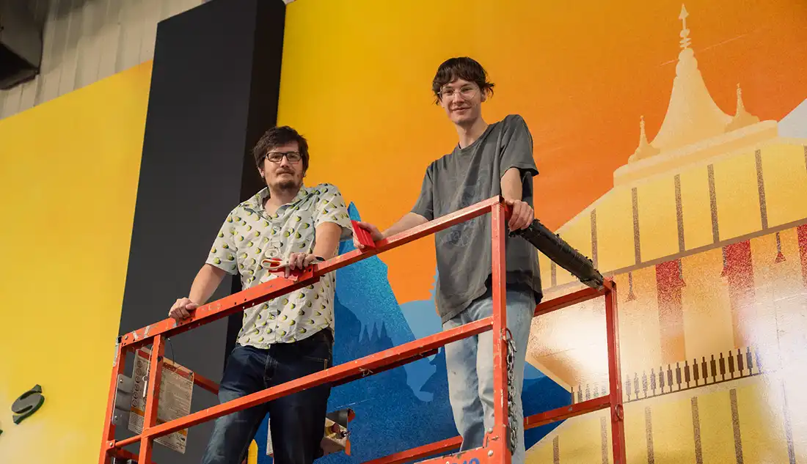
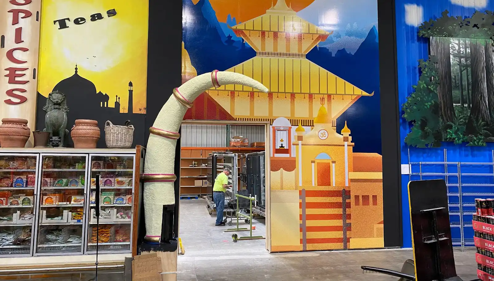

🙀 Selected Print Design
Below you’ll find a gallery of posters, murals, logos, and other artwork from my time at Jungle Jim’s. I’ve built visual vocabularies for more events than I can count—everything from logos and posters to wayfinding graphics for new events and festivals.
Posters


Metro Bus Wraps
As part of our 50th anniversary celebration, we wanted to bring the Jungle to the streets of Cincinnati. So, we put our money where our mouth is and wrapped three Metro buses with full top-to-bottom graphics.
The final production files weighed in at nearly 50 GB.


Festival Refreshes
It had been nearly 10 years since the last revisions, so it was time to take things further. For Beer Fest, I tried to design a fresh look without the gorilla, but honestly—it just didn’t feel right without him.
Wine Fest was another story. In my opinion, it needed a bigger refresh and a new direction. As our #1 selling (and most expensive) show, it attracts a more formal audience than our other festivals.
Pickle Wars Festival
Pickle Wars launched in 2022, right around the time I started at Jungle Jim’s. This festival is wacky, fun, and just a little over the top. Guests can sample pickles and pickle-flavored creations, then compete in the “Gherkin Gauntlet”—a pickle-eating, brine-drinking challenge—where the winner takes home a 12-inch gold wrestling belt.


Nepal Mural
The largest thing I ever installed at Jungle Jim’s was the entryway to a new 2000 sq ft addition to the store. The mural depicts the Pashupatinath Temple in Kathmandu with simple linework, vibrant colors, and dense texturing. While we didn’t have the space to make it life sized, the mural still stands at about 30 or 40 feet tall.

